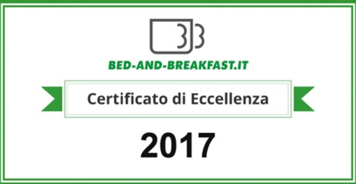

Ein paar Schritte vom schönen Meer entfernt, in der schönsten Gegend des Ionischen Meeres, charakterisiert durch herrliche Buchten mit feinem Sand, langen Stränden und Klippen; erhebt sich im Herzen des historischen Zentrums von Pulsano, dem B & B Il Vicoletto. Ein intimer und angenehmer Ort, wo Sie den Charme der Burg und des Glockenturms der Kirche genießen können, die auf den kleinen umliegenden Häusern hervorsticht.
Bewertungen
Andrea  - 29/04/2018 -
- 29/04/2018 - 
«Perfetto! Casualmente mi sono imbattuto nella scelta di questo B&B, ma una volta conosciuta la struttura e il proprietario, di certo so che ora avrò un posto fisso dove trascorrere le mie vacanze. Quando si fanno le cose con amore non possono che nascere cose semplicemente perfette! L'arte dell'ospitalità si può anche acquisire ma quando l'hai nell'animo e nel cuore hai una marcia in più e questa marcia in più è propria di Jacopo. Sempre disponibile, cordiale ed educato. Vacanze divine. C'e' bisogno di queste attività per far conoscere la bellezza di questo bellissimo posto. Ci tornerò sicuramente.»
Delio - 4/06/2018- 
«Una vera chicca nel centro di Pulsano, a circa 4 km dal mare.. molto curato nei dettagli, pulito ed accogliente. Il proprietario Jacopo è un ragazzo gentile e disponibile. Ottimo rapporto qualità prezzo. Assolutamente consigliato!»
Leonard  - 13/06/2018-
- 13/06/2018- 
«Stayed for two nights. Great location right by one of the town squares. There is an old castle and a beautiful church within view and the sounds of the church bells add it to the feel of Italy. The rooms were clean and modern with a bit of old world charm, high ceilings and a balcony with a table and two chairs. The owner Jacobo was friendly and informative. He made our stay very special. Beaches nearby with nice restaurants and bars. Always something going on in the Square at night there was a concert from a local high school band. + Out is laid-back and fun we love their stay. The Internet rocks»
Stefania - 3/06/2018- 
«Stanza spaziosa, accogliente e confortevole nel centro di Pulsano. Il proprietario, che ci ha accolto, molto disponibile e pronto a dare consigli. Posizione strategica per raggiungere le spiagge vicine. Consigliatissimo!»
Certificate of Excellence 2017
Eine neue Anerkennung für unsere Struktur und unsere Arbeit. Die Website www.bed-and-breakfast.it belohnt uns mit einem Certificate of Excellence für das Jahr 2017 mit einer Punktzahl von 9.3 / 10. Dank unserer Gäste, die uns weiterhin wählen, stimmen und uns neue Ideen geben, um unseren Service jeden Tag zu verbessern
Kannst du uns nicht erreichen?
Kontaktieren Sie uns für weitere Informationen zu unserem Shuttle-Service!
Das B & B Il Vicoletto unterstützt den
1. Mai in Taranto
Jacopo und Piotta